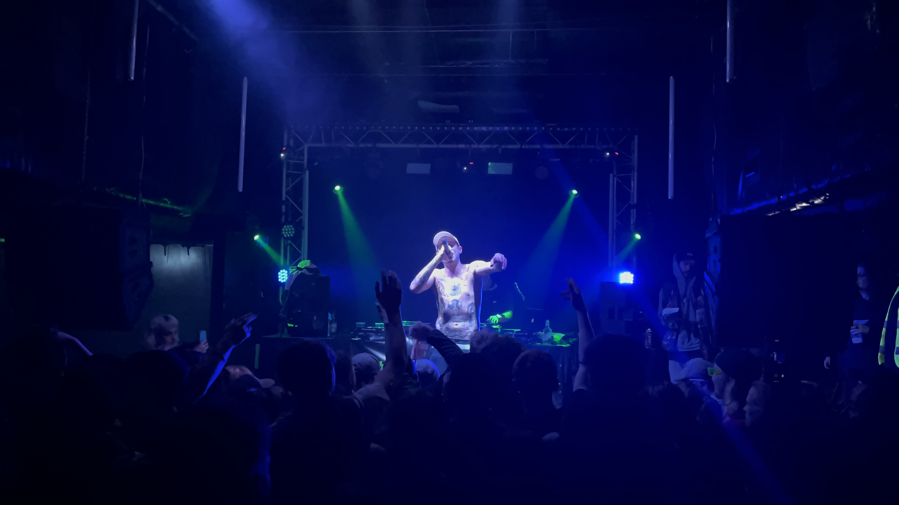
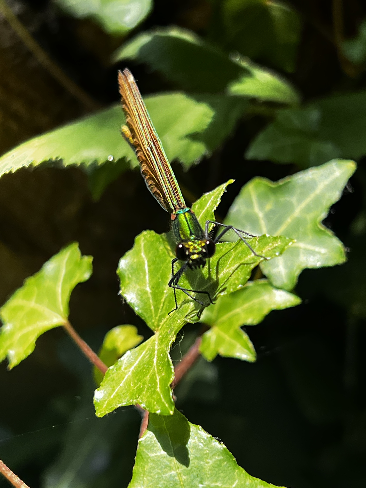
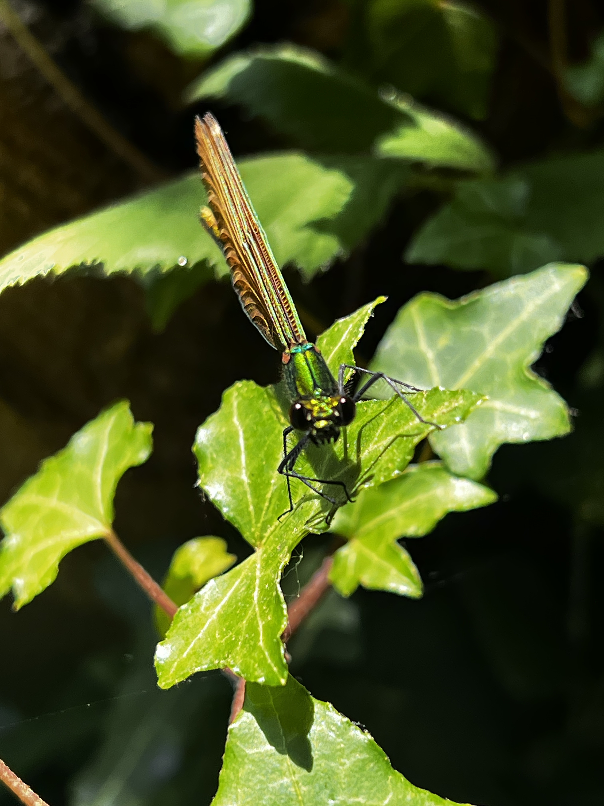
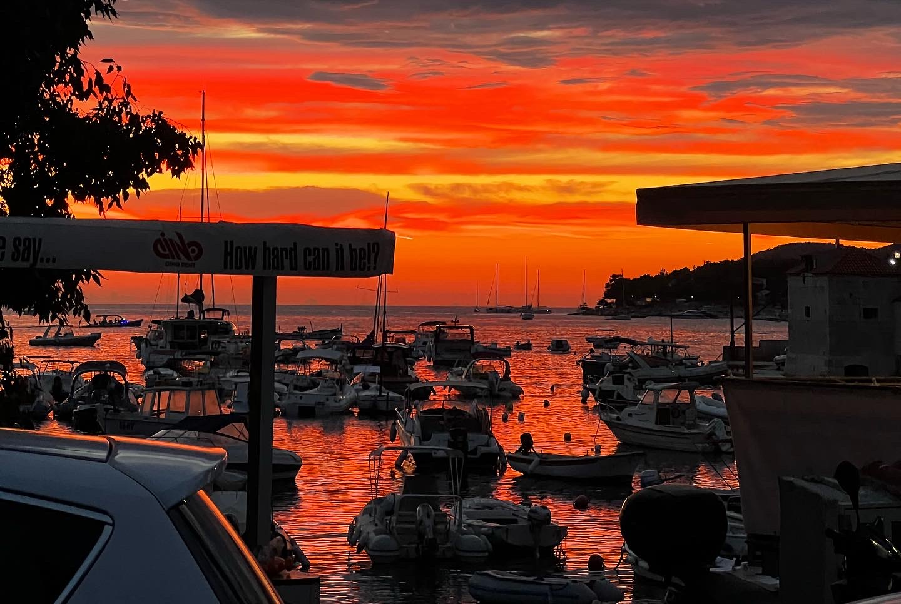
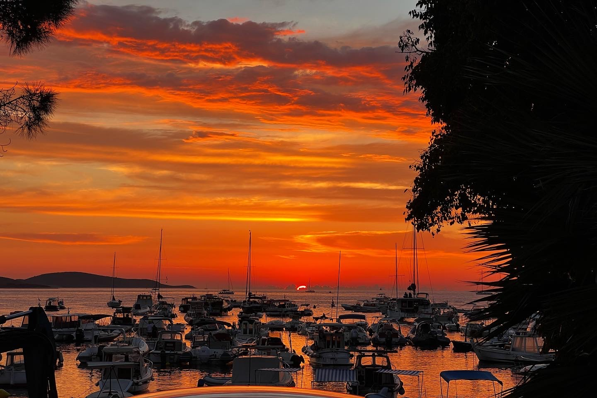
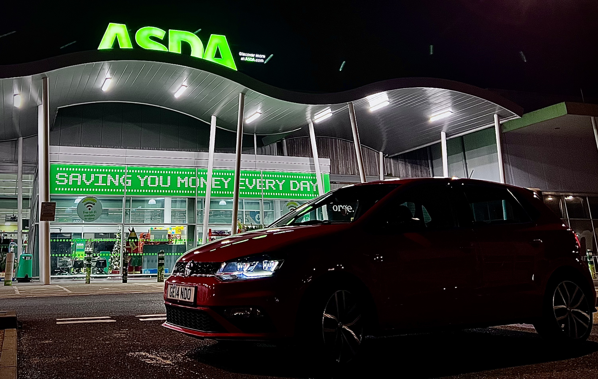
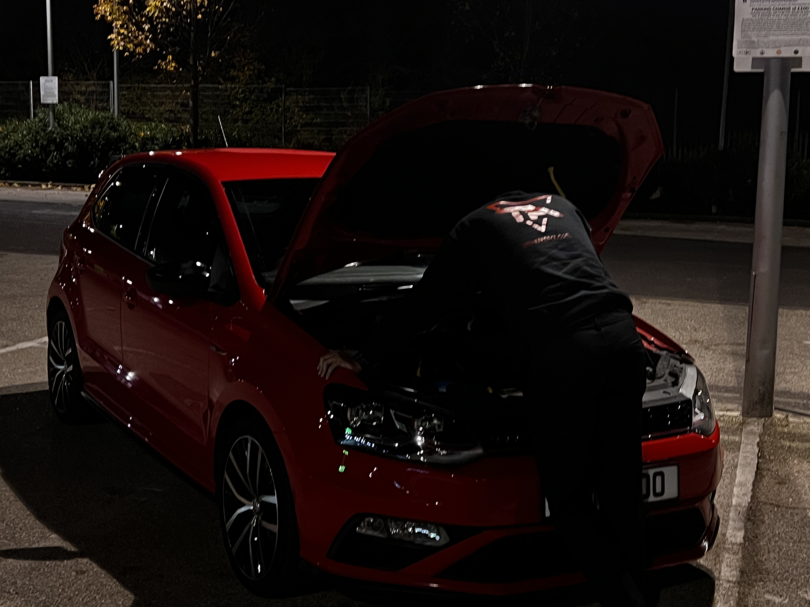
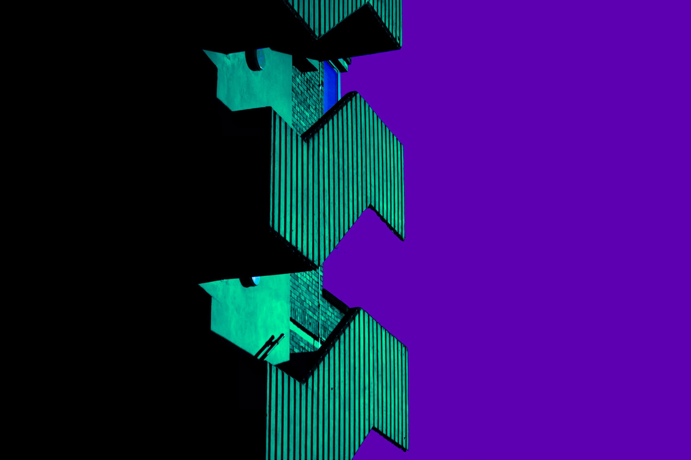
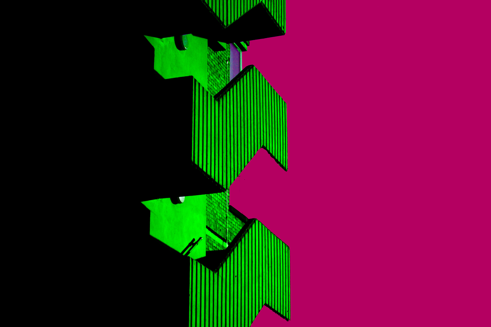
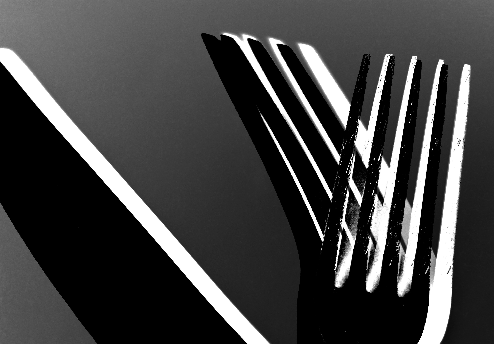

Photography
The following pictures are some examples of both my portrait and landscape photos, both edited and un-edited. I have also included some more abstract photos of mine.

I've chosen this image to be placed at the top of my page as it is one of my favourite pictures I've taken. It was taken during a gig for a british artist called JamBaxter.


These top two images are from a holiday trip i took in the Lake District. I took many picrures on this holiday but these two are my favourite form the trip.
 


The images above are from the Japanese Gardens in Newquay. I went there whilst on holiday and loved the scenery and the ammount of Dragonflies was incredible. The Dragonflies would be flying all around me landing next to me as if they wanted their picture taken.

 
These three images are some of my favourite sunset images I have taken. The first image is from Newquay and the others from a trip I took to Hvar, Croatia.
 
These two images were from a photo shoot i did for a friend for his social media. im very proud of these images because of how i used the natural lighting around to create depth and boldness.
 
These images are some of my more abstract images that are highly edited to give a stimulating asthetic look that draws in the attention using the bold colours.

This image was taken in for a school project I was doing. This image took a while to get right but eventually after the editing I was able to come out with this image. The final outcome was a lot better than what i was hoping for and im very happy with this picture.